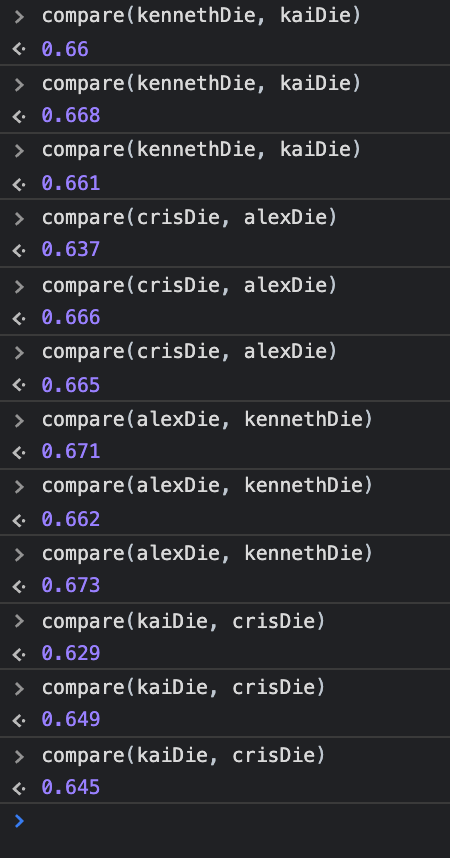
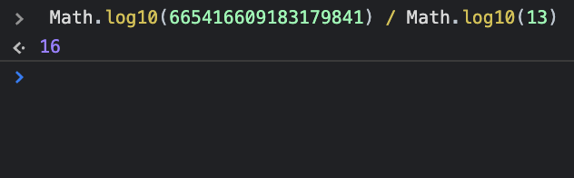
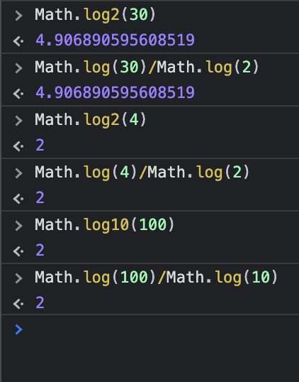

Look at the image called continued fraction. Sort of like an infinite repeated decimal, this is an infinite repeated fraction. Those three dots (the ellipsis) go on forever. But let’s calculate an approximation. Evaluate the expression as if the ellipsis has the value zero. Take a screenshot to show your work. You can do it in the JavaScript console with one expression and a whole bunch of parenthesis.

answer
I notice that the result is kinda similar to the square root of 2
In the Moon Unit Zappa question from last week, when she was four years old she had four books. Along these lines, write a JavaScript program that will generate all permutations of the letters a b c d and console.table the result. So we should see abcd, abdc, acbd, ….
answer
function getAllPermutations(string) {
var results = [];
if (string.length === 1) {
results.push(string);
return results;
}
for (var i = 0; i < string.length; i++) {
var firstChar = string[i];
var charsLeft = string.substring(0, i) + string.substring(i + 1);
var innerPermutations = getAllPermutations(charsLeft);
for (var j = 0; j < innerPermutations.length; j++) {
results.push(firstChar + innerPermutations[j]);
}
}
return results;
}
Write functions to play rock-paper-scissors. You’ll write three functions for the three players; use the following identifiers to name your functions: crisRPS, alexRPS, kennethRPS. Implement these any way you like, so long as they are capable of returning an object like this: {name: 'cris', rps: 'scissors'} — so in this example crisRPS has been invoked, it tells it’s name (‘cris’), then its rock-paper-scissors value, in this case ‘scissors’. Use whatever strategy you like to generate the rps value. Then write a second function play(func1, func2) that takes two rock-paper-scissors functions and plays them against each other one time. It outputs an object like this {players: 'cris vs alex', result: 'rock rock — draw'} or like this {players 'cris vs alex', result: 'scissors paper — cris wins'}. Play this game 10 times.
answer
//crisRPS function
function crisRPS(){
const name = 'cris';
const rps = 'rock paper scissors'.split(' ')[Math.floor(Math.random()*3)]
let obj = {};
obj["name"] = name;
obj["rps"] = rps;
return obj;
}
//alexRPS function
function alexRPS(){
const name = 'alex';
const rps = 'rock paper scissors'.split(' ')[Math.floor(Math.random()*3)]
let obj = {};
obj["name"] = name;
obj["rps"] = rps;
return obj;
}
//kennethRPS function
function kennethRPS(){
const name = 'kenneth';
const rps = 'rock paper scissors'.split(' ')[Math.floor(Math.random()*3)]
let obj = {};
obj["name"] = name;
obj["rps"] = rps;
return obj;
}
Look at last week’s homework where you wrote a compare function.
- Run each of part a-d 3 times, capturing all results
- Explain, mathematically, why the theoretical probability for each result is precisely 2/3.
answer
-
These are the result that the compare function return 3 times every part
 - Becuase for every different example, the probability to win of one side is the double to win for the other side
Look at last week’s homework, question 8, the easy console work. Use the results you got to make intelligent guesses for the what these values should be, without needing to consult MDN:
- Math.LN2 = 0.6931471805599453
- Math.LN10 = 2.302585092994046
- What is the “LN” for?
answer
LN stands for logarithm, so I think Math.log(2) is the same as Math.LN2 and in the last homework in the console work assignment you asked fot Math.log(2) and Math.log(10), so I guess is the same result for these two console work.
Use your graph function to show 5 different functions (on the same graph) that have significant differences to any functions you’ve graphed before. Go for complex and bizarre combinations you haven’t tried before.
answer

const extraFunc5 = (x) => x**-9/x*4
const extraFunc4 = (x) => Math.cos(x)**Math.cos(x)
const extraFunc3 = (x) => Math.cos(x) * 8 / Math.sin(x) * 4
const extraFunc2 = (x) => x**6 * -5
const extraFunc = (x) => 2*x**4/x**x**-3
Use your graph function to show 5 different functions (on the same graph) that you think would be suitable for a guess-the-function game — so maybe a couple really easy ones, and a few medium difficulty ones.
answer
Function ready for a round of guess the function.
New logarithm rule:
- from last homework, what was the value of Math.log13(665416609183179841)?
- On Sunday we discussed that the above value is exactly equal to the extra credit question — Math.log10(665416609183179841) / Math.log10(13) — Prove this by evaluating this expression in the JavaScript console.
- Use part b to deduce what the new logarithm rule is. Write down that new logarithm rule. Test it out for a few easy examples. Show your work.
answer
- The value of Math.log13(665416609183179841) is 16.
-
Tried. 
-
The logarithm rule is that the logarithm base x of n number is the same result as logarithm normal base of n number divided by the logarithm normal base of x number.
Here some examples:

Have a codecombat contest session with the three of you. Write down a few sentences describing how it went, and what was the most interesting thing you did.
answer
It was so incredible!, I like it very much, the new game option work just like screeps it is similar to screeps there are little workers that pick up tree different materials, fire, water and earth and they send the material to a magic guy who is like your superhero and it’s attack to the other superhero of the other user and there are spells for the magic guy. And I really got surprise!!, because just in that day I advance to the number tree hundred something in the users ranking!!, and it surprise me because there are like a thousand of players!.
Please give a brief update on Screepslandia.
answer
Right now I am not doing something interesting or something especial I am just looking for my second room, like I have been doing all these time, and also now that I have my room controller in level 6 I am just constructing my terminal and the labs and making the code for the creeps to make it works for my terminal and also I am making the extractor’s code (the extractor is what we extract the material from the room with).